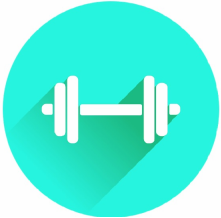

O Health Track é um app e site que auxilia na sua atividade física, controle de alimentos e sua calorias, promove o controle da sua pressão e BPM, apresenta uma variedade de vídeos de dança, hiit, zumba, yoga e todo e qualquer tipo de atividade física que você queira,você pode adicionar seus cardápio do dia e conversar por um bate-papo com nutricionistas que irão te ajudar no seu dia-a-dia a atingir seu objetivo. Entre agora e conheça nossos planos e qual se encaixa melhor na sua rotina!